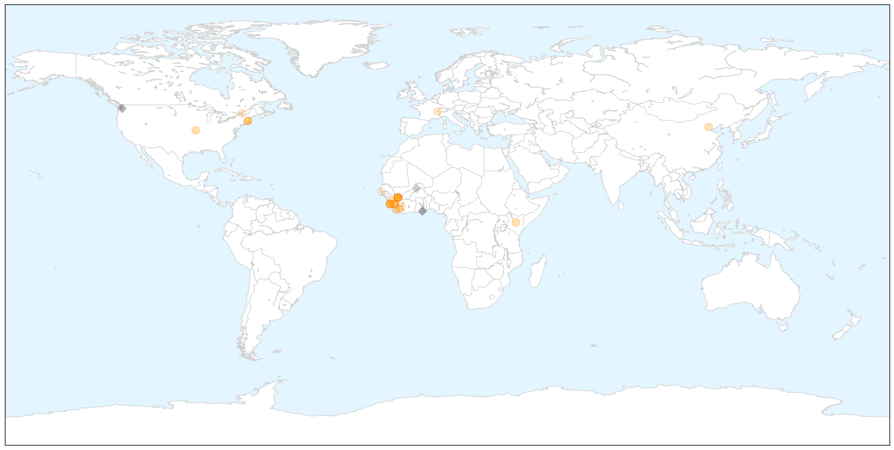
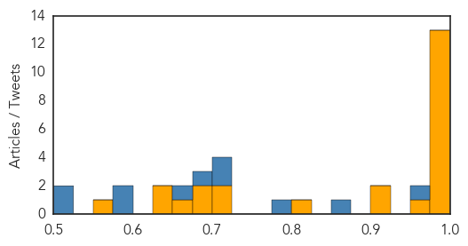
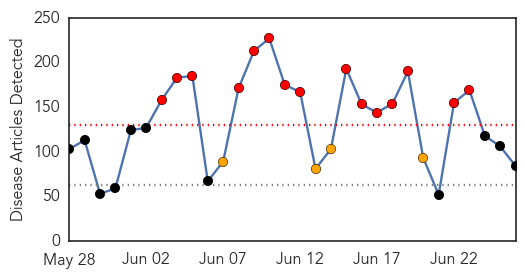
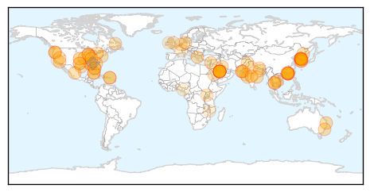
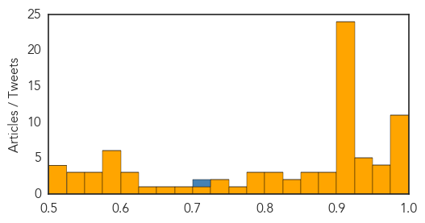

Ebola
30-Day Web Trend
0 alerts, 0 warnings

30-Day Twitter Trend
0 alerts, 0 warnings

Article Locations

X

Article Confidences
Top Articles:
- 1.000
- Ebola diagnosis now possible within minutes
- 1.000
- Sierra Leone, Guinea quarantine people, villages again
- 1.000
- Ebola detected within MINUTES with new test device
- 1.000
- Sudan Vision Daily
- 0.999
- Ebola genome insights indicate that containment worked
- 0.998
- New bedside test predicts Ebola infection in minutes
- 0.998
- Liberian bikers use Ebola suits as raincoats
- 0.996
- Dexter Daily Statesman: Local News: Epidemiologist advises no fear of Ebola (06
- 0.994
- Changes in Screening and Monitoring of Travelers Returning from Liberia
- 0.992
- Helping Guinean communities fight Ebola
- 0.991
- Finger-prick test can diagnose Ebola as easily as a pregnancy test
- 0.991
- Patient trial validates Ebola rapid test - Health, Science and Environment
- 0.987
- Researchers frustrated by failure to roll out 'game-changing' Ebola test : Nature News & Comment
- 0.972
- Leaders Praised For Ebola Response - Sierra Leone
- 0.917
- Port Loko Ebola Response Coordinator Debunks MP
- 0.901
- Sierra Leone Envoy in China Presents Post-Ebola Recovery Strategy to Chinese Authorities: Sierra Leone News
- 0.803
- NigerianEcho — Plateau state Govt re-trains Health Workers to Handle Ebola disease as Virus re-emerges in Sierra Leone
- 0.715
- Sierra Leone: Appeal of child orphaned by Ebola
- 0.710
- Doctor honoured for helping tackle Ebola in West Africa
- 0.697
- Ganta Ebola Monument Center dedicated
- 0.678
- Before the Next Ebola Strikes: Lessons Learned
- 0.675
- Central African Republic
- 0.643
- Chevron Briefs Health Ministry on Plans to Support Part of Sierra Leone Post-Ebola Recovery: Sierra Leone News
- 0.632
- ICAO’s visit and emergency medical vigilance at airports
- 0.552
- APC political activist urge Sierra Leoneans in Gambia to be law-abiding
Top Tweets:
- 0.955
- Ebola Update: 27467 confirmed probable & suspected cases reported in 3 most affected countries with 11217 deaths. EbolaResponse
- 0.855
- If people do not change their attitude there are bound to be more Ebola cases -Patrick Fatoma Nat'l Ebola Response Center SierraLeone
- 0.780
- Sierra Leone: A Survivor's Mission to 'Revenge' on Ebola - Awareness Times http://t.co/DQF9PKPmJY ebola EVD
- 0.709
- Patient trial validates Ebola rapid test - New Vision http://t.co/Edy730RWW4 ebola EVD
- 0.708
- Ebola digs in its heels: Why the virus won't go away in West Africa http://t.co/K0RqaPP0f5
- 0.694
- Broadmoor Hospital nurse helping with Ebola fight nominated for top industry ... - getreading http://t.co/3VU7SeSNqK ebola EVD
- 0.670
- New study reveals key part of Ebola virus life cycle at higher resolution than ... - News-Medica http://t.co/GO2vMvtsR3 ebola EVD
- 0.590
- Ebola-hit Sierra Leone quarantines 31 health workers:... http://t.co/VWPBDNkiKl
- 0.576
- Actor Adopts Ebola Victims' Kids - GhanaWeb http://t.co/mxHAL3Xzm5 ebola EVD
- 0.521
- New bedside test predicts Ebola infection in minutes - The Conversation AU http://t.co/y2Z3duKwcb ebola EVD
- 0.508
- A Rapid Ebola Test Can Diagnose the Disease In Just Minutes - TIME http://t.co/DtJD8kIiOC
Unknown
30-Day Web Trend
15 alerts, 4 warnings

30-Day Twitter Trend
7 alerts, 1 warnings

Article Locations

Article Confidences
Top Articles:
- 0.999
- Update; Death toll rises to 31 due to outbreak
- 0.998
- South Korean man who was China's only MERS case recovers
- 0.998
- Another Samsung doctor contracts MERS
- 0.993
- Two more die of MERS in S Korea, including caregiver , news, Health News, AsiaOne YourHealth
- 0.992
- Fear in the air
- 0.990
- S Korea to jail people defying MERS quarantine measures
- 0.989
- South Korea passes new law to curb MERS outbreak
- 0.988
- South Korea hospitals to monitor emergency room visitors in battle on MERS
- 0.985
- South Korean hospitals ordered to track ER visitors in battle on MERS
- 0.978
- Pattaya News, Communities, Opinions and much more...
- 0.977
- Meningococcal case sparks warning
- 0.968
- Foreign Policy
- 0.964
- Six more anthrax cases detected in Koraput village
- 0.956
- South Korea To Track All Emergency Ward Visitors As 2 More Deaths Reported In MERS Outbreak
- 0.952
- CDC Warns of the Health Dangers of Pool Water
- 0.950
- China's first MERS patient discharged from hospital
- 0.949
- Indonesia at high risk of MERS: officials
- 0.947
- Officials check Bangkok hospitals' readiness to treat MERS cases
- 0.945
- New illnesses mean more reason to watch out for ticks
- 0.928
- South Korean man who sparked Mers health scare in China discharged from hospital
- 0.923
- S Korea passes law to contain deadly MERS outbreak
- 0.917
- Chicago Tribune
- 0.917
- Chicago Tribune
- 0.917
- Chicago Tribune
- 0.917
- Chicago Tribune
- 0.917
- Chicago Tribune
- 0.917
- Chicago Tribune
- 0.917
- Chicago Tribune
- 0.917
- Chicago Tribune
- 0.917
- Chicago Tribune
- 0.917
- Chicago Tribune
- 0.917
- Chicago Tribune
- 0.917
- Chicago Tribune
- 0.917
- Chicago Tribune
- 0.917
- Chicago Tribune
- 0.917
- Chicago Tribune
- 0.917
- Chicago Tribune
- 0.917
- Chicago Tribune
- 0.917
- Chicago Tribune
- 0.917
- Chicago Tribune
- 0.917
- Chicago Tribune
- 0.909
- Private hospitals adhere to MERS control guidelines, MOPH says
- 0.907
- S. Korea Passes New Law to Curb MERS Outbreak
- 0.904
- Swimming pool, hot tub water contamination increasing in the U.S.
- 0.892
- Ticks and Lyme disease
- 0.878
- “Flesh‐eating” virus claims its fourth victim this year in Mississippi
- 0.877
- 86 Alabama Children Who Attended Same Daycare Sick With Possible Food-Borne Illness, S. Aureus Toxin Found
- 0.867
- Indonesia at high risk of MERS
- 0.866
- INSTANT VIEW 6-U.S. Supreme Court makes gay marriage the law of the land
- 0.850
- No new MERS cases for two South Korea hospitals
Showing top 50 articles...
Top Tweets:
- 0.705
- RT: MERS in SouthKorea update: over 170 cases all linked to health care facilities where MERS patients were treated. http://t…